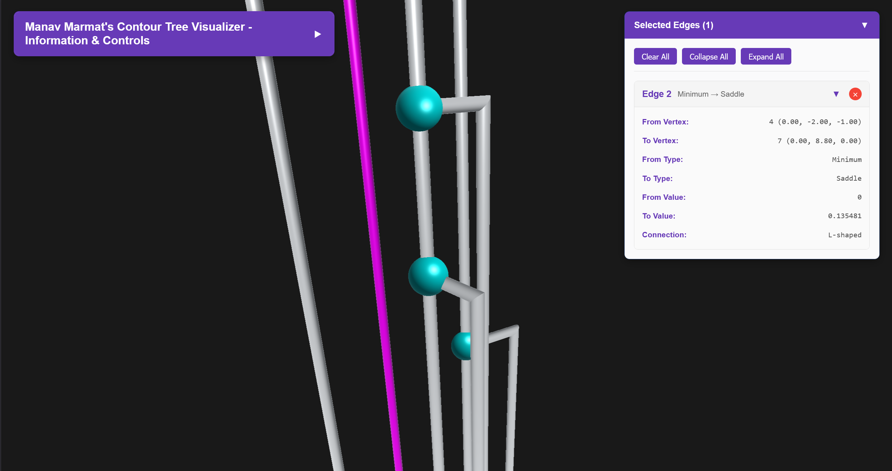
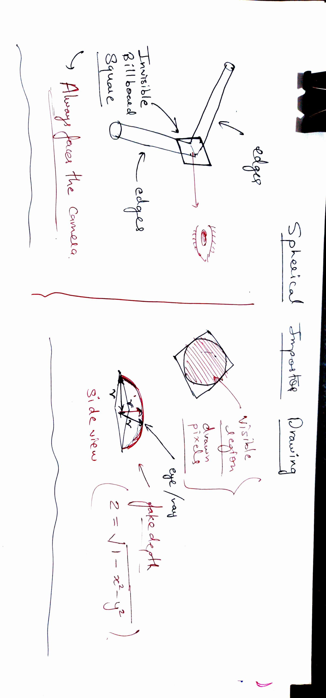

My First Internship Journey
How a summer at the Visualization and Graphics Lab (VGL), IISc Bengaluru turned into my first real taste of research, collaboration, and building tools that express data through graphics.
“Walking past the greeneries of IISc on my first day, I realised this wasn’t just an internship; it was my first opportunity to build myself.”
1. Why This Story Matters
This internship was my very first academic experience outside my college, and it helped me build connections, improve my conversational skills, work in a collaborative environment, and make early steps towards research.
2. How I Got Here
In my college, Maulana Azad National Institute of Technology, or in short “MANIT”, there is a WhatsApp group in which there are both professors and students. One day, Prof. Rahul Chourasiya sent us an advertisement for the Indian Academy of Sciences, Summer Research Fellowship Programme, and he mentioned, “Students having a high CGPA are more likely to be selected”. I was having an overall CGPA of 8.12/10, so I was reluctant at first to even fill out the form, but after consulting with my BFF (my elder brother), I eventually decided to give it a shot and forgot about it, thinking I might not even get a reply.
I am an Electronics and Communication Engineering Undergrad with a career focus in computer graphics, vision and game development. My career plan is fixed as a Game developer since I was in 8th standard, as games were the only thing that kept me engaged (I am a bit introverted, lol, plus I never had great friends in school).
Before this internship, I developed an indie game humorously named “BhaataPhod”, because of the immense “MaathaPhod” (i.e. Brainstorming). It was the only star thing in my resume at that time, and I was only counting on that single project for the application.
For the application, I always had my “bro” on my side, as he also applied to the same program during his undergrad years, so I had someone to contact and help me through the process.
Tip: Writing a Statement of Purpose
Draft it in a “me, you, and us” rhythm:
Write the statement of purpose letter, in a Me, You and Me and You format, in easy words i mean that you must explain about your achievements and projects and interests, then the field you want to work in and what exactly is going on in that field, and lastly explain how you can contribute to that domain and are a best fit for this programme.
3. Prepare for Bengaluru
The selection process is straightforward; out of all the profiles received by IASc, they are paired with a suitable mentor, and then a list is published with everyone’s name on it. The email was not sent timely and I was not checking the list myself from time to time (you all know why). How I got to know about my selection is a humorous story as well.
Scene · Early Morning Wake-up
- Stage direction: I’m asleep when the phone explodes with a ringtone.
- Manav (still sleepy): Haan bhai?
- Sidesh (my batchmate): “Bhai, teri intern lag gayi hai!”
- Manav: Arre, kisi aur ko bewakoof bana. Please sone de. (hangs up, fully convinced he is not selected)
Later, after 2-3 hours, when I woke up, I checked my name on the list, and surprisingly, it was there !! (Yes, it was surprising for the 2nd Year Manav).
After contacting the Professor via email and deciding on the dates, I was ready to fly (for the first time in my life) to Bengaluru. Upon reaching, I was met with the fast-moving crowd and lifestyle of Bengaluru. At first glance, the campus was very beautiful and quiet, something which I expected from my college as well (but …).
After reporting and formalities, I met my labmates, fellow interns and other students there in the Visualisation and Graphics Lab (VGL), Computer Science and Automation Department, which is under Prof. Vijay Natarajan’s supervision.
In the lab meetings, I met : Amritendu, Vishali, Deepak Solanki, Ravindra, Rikathi, Shashi, Rajkumari, Suraj, Nirbhay, Santripta. They were all very helpful and kind to me, and I felt welcomed in no time.
4. What I Worked On
As my experience with graphics libraries was a plus, I was put on a research group that was working on visualising the loss landscape of a neural network using contour trees (basically finding out patterns in the topology of the network, the connection between features and branches across epochs), to study how exactly the network is “learning”. The models under study were DenseNet, ResNet, WResNet, MobileNet and PyramidNet.
Contour trees are basically a data structure consisting of nodes and edges, and are mostly used to summarise the topological features of an object or data, into three types of points, namely Minima, Maxima and Saddles (depending on the function value, one can understand them using a 3D function).
In the team, there were 4 people, including me: Rikathi, Prof. Vijay and Dr Harish (Principal Researcher at Microsoft, alumni of VGL).
Checkout the profile of VGL's team VGL members.
I was tasked to make a software that can help visualise the contour trees, clean and parse the vertices and function value data and can be used to select a specific edge, and make the software modular to be able to use it as a plugin/tool in a larger project. While my immediate mentor was Rikathi Pal and she was working on the model and the project for her paper.
My approach to this project was very basic and straightforward. I first focused on making the cylinder edge and nodes only using WebGL, and then later expanded the logic to handle more and more vertices. Later on, I parsed the input file and used it to populate my custom data structures that I can use to construct the graph.
Later, I replaced the primitives with their impostors (both spheres and cylinders), more on that in the next section, and started implementing the selection logic using a framebuffer (basically rendering a hidden low-poly version with different colours and reading that colour for selection of the object in the actual scene).
The whole development was done in JavaScript ES6 using WebGL2.
5. Learning Curve & Struggles
The one and only struggle I had in the entire project was to implement a cylindrical impostor geometry and make it consistent with the L joints for edges (I am sorry for the jargon). Impostor geometry is basically a fake 2D or 3D low-poly object that is shaded as a high-quality object. I had to make a cylindrical Impostor for the edges and a spherical one for the nodes.


6. Day-to-Day Life at IISc
We were allotted rooms in the academy guest house, which were spacious and maintained, with cleaning done thrice per week, and linen was given by them only for INR 3000 per month. (The only thing that was not there was good internet connectivity).
My fellow mates there were very cool, and I am still connected with them, and we do talk sometimes. I used to attend the lab 3 days a week and eat food in the IISc canteens (Kabini canteen and Security gate food truck), and if I had Deepak Bhaiya in the lab, I used to eat with him in his hostel using his mess card.
Late evening campus walks, breezy Bangalore weather and rainy season made the environment cherry on top of my whole internship experience. My fellow SRF friends with whom I used to roam around the campus and eat canteen food, and also attended the 3-day conference/symposium (mostly for free food and fun, lol), made my experience joyful and memorable.
Thanks to: Shivansh, Siddarth, Hrishabh, Souvik, Aayushman, Mahesh, Tridev, Aditya, Rakesh and Anirban. We had a lot of fun together.
7. How This Internship Changed Me
I was just a second-year boy, before this internship, and I was hesitant to talk to strangers, argue, and collaborate in discussions, but the friendly environment of my Lab made me comfortable talking to people and getting insights and advice. I got to know how to handle deadline-based work, participate in team meetings and give presentations.
Looking ahead to this Internship, I am looking forward to new opportunities to contribute to computer graphics, vision and machine learning domain programmes and also focus on my career prospects (and long-postponed self-projects and ideas).
I want to thank my instructor, Prof. Vijay Natarajan, for his supervision and mentorship throughout the project, and also his associates and students, especially Ms Rikathi Pal and Dr Harish Doraiswamy.
Last but not least, I want to thank my mentor and teacher, Dr Lalita Gupta, for her kind support and recommendation for this internship programme.
Photo Gallery
A few frames that still smell like petrichor, solder flux and filter coffee—from lab lunches to late-evening walks across the IISc campus.


.jpg)